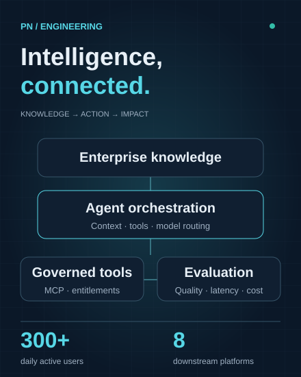
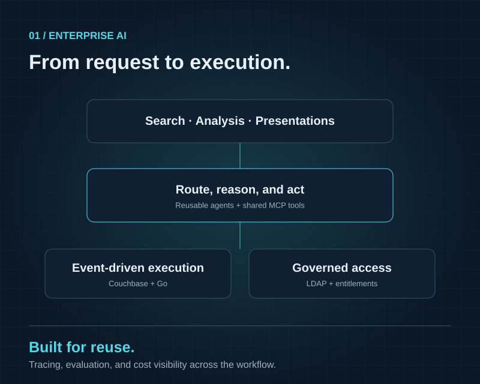
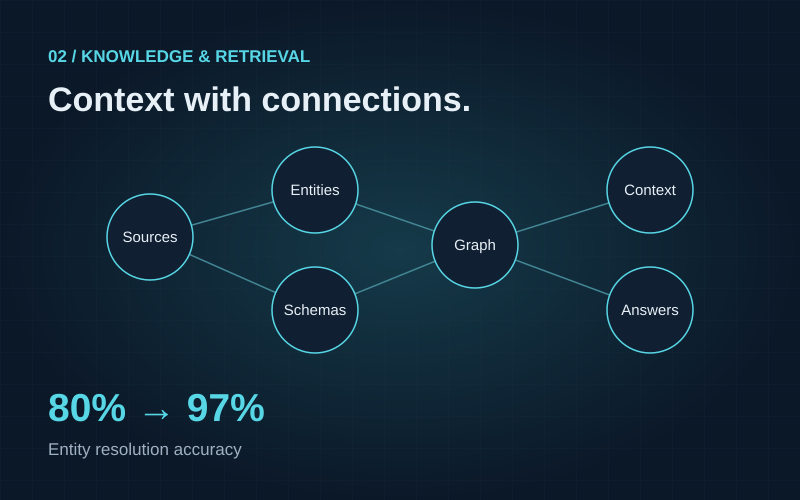
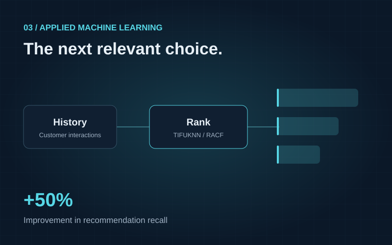

Agents & LLMs
LangGraphLangChainGoogle ADKMicrosoft Agent FrameworkMCPTool CallingModel Routing
Tampa, Florida · Generative AI & engineering
Building at the intersection of agentic AI and production engineering.
I turn enterprise knowledge into useful AI systems, with a focus on reliable agents, better retrieval, and measurable outcomes.

01 / About
I’m Pranav, a Generative AI Specialist at Citigroup Technology, working through Xoriant in Tampa. I build the platforms, retrieval systems, and backend services that help people put AI to work.
My path spans quality engineering, recommendation systems, document intelligence, and enterprise agents. Across that work, I care about the same things: accurate answers, dependable infrastructure, and outcomes that can be measured.
Today, that means connecting enterprise knowledge to agents, evaluating them against real use cases, and making them easier to operate and govern.
02 / Capabilities
From model orchestration and retrieval to observability and deployment.
03 / Experience
Citigroup Technology
Contract via Xoriant
Citigroup Technology
Contract via Xoriant
ElasticRun
AppViewX
04 / Selected work
A closer look at professional work across enterprise AI, knowledge retrieval, and recommendation systems.

One platform for enterprise search, analysis, presentations, and scheduled workflows, built to support adoption and dependable execution.
Reusable tools and contextual tool gating keep agents focused on the task. Question-complexity routing balances model capability with inference cost, with escalation at configured response-time or LLM-call thresholds. Distributed tracing and SME-reviewed evaluations make quality, latency, and cost visible.

Ongoing semantic-layer work combines knowledge graphs, ontology-driven ingestion, and deterministic file parsing to improve retrieval and answer consistency.
A source-agnostic semantic layer brings structured and unstructured knowledge into a common representation. Schema, metadata, and relationship extraction support graph-based context; LDAP, entitlements, approvals, and audit trails govern access through shared MCP tools.

TIFUKNN/RACF recommendations refined through hyperparameter tuning, model feedback, and data reduction, with metric pipelines to track business impact.
Model feedback, hyperparameter tuning, and data reduction improved retrieval of relevant products. Metric pipelines and Metabase dashboards connected model quality to business outcomes, while separate Apache Pinot ETL work reduced Databricks compute overhead and storage redundancy.
Beyond the day job
Public projects spanning machine learning and web development.
A Django application that accepts an image, preprocesses it for a pretrained MobileNet-based model, and returns a predicted sign-language letter.
A server-rendered blog with post creation, editing, detail pages, and publication dates. A compact example of models, forms, views, and templates working together.
Research reference · ForkRecency Aware Collaborative Filtering
Employer work is summarized from professional experience; diagrams are illustrative. Public source is linked separately above.
Explore my GitHub05 / Education
Amrita School of Engineering
2017–2021 · GPA: 9.15/10 · Honors · University Rank 7
Coimbatore, India
06 / Contact
Have a question about agentic systems, enterprise knowledge, or production AI? I’d be glad to connect.